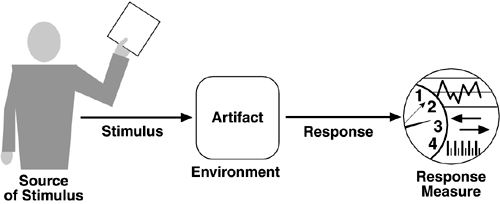
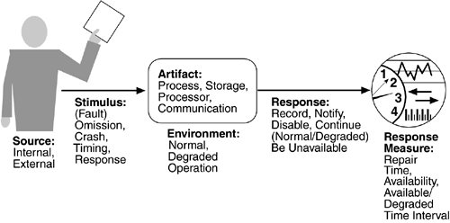
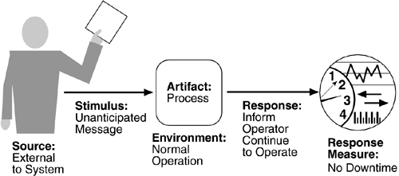
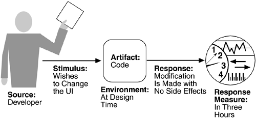

| [ Team LiB ] |
|
4.3 System Quality AttributesSystem quality attributes have been of interest to the software community at least since the 1970s. There are a variety of published taxonomies and definitions, and many of them have their own research and practitioner communities. From an architect's perspective, there are three problems with previous discussions of system quality attributes:
A solution to the first two of these problems (nonoperational definitions and overlapping attribute concerns) is to use quality attribute scenarios as a means of characterizing quality attributes. A solution to the third problem is to provide a brief discussion of each attribute—concentrating on its underlying concerns—to illustrate the concepts that are fundamental to that attribute community. QUALITY ATTRIBUTE SCENARIOSA quality attribute scenario is a quality-attribute-specific requirement. It consists of six parts.
We distinguish general quality attribute scenarios (general scenarios)—those that are system independent and can, potentially, pertain to any system—from concrete quality attribute scenarios (concrete scenarios)—those that are specific to the particular system under consideration. We present attribute characterizations as a collection of general scenarios; however, to translate the attribute characterization into requirements for a particular system, the relevant general scenarios need to be made system specific. Figure 4.1 shows the parts of a quality attribute scenario. Figure 4.1. Quality attribute parts Availability ScenarioA general scenario for the quality attribute of availability, for example, is shown in Figure 4.2. Its six parts are shown, indicating the range of values they can take. From this we can derive concrete, system-specific, scenarios. Not every system-specific scenario has all of the six parts. The parts that are necessary are the result of the application of the scenario and the types of testing that will be performed to determine whether the scenario has been achieved. Figure 4.2. Availability general scenarios An example availability scenario, derived from the general scenario of Figure 4.2 by instantiating each of the parts, is "An unanticipated external message is received by a process during normal operation. The process informs the operator of the receipt of the message and continues to operate with no downtime." Figure 4.3 shows the pieces of this derived scenario. Figure 4.3. Sample availability scenario The source of the stimulus is important since differing responses may be required depending on what it is. For example, a request from a trusted source may be treated differently from a request from an untrusted source in a security scenario. The environment may also affect the response, in that an event arriving at a system may be treated differently if the system is already overloaded. The artifact that is stimulated is less important as a requirement. It is almost always the system, and we explicitly call it out for two reasons. First, many requirements make assumptions about the internals of the system (e.g., "a Web server within the system fails"). Second, when we utilize scenarios within an evaluation or design method, we refine the scenario artifact to be quite explicit about the portion of the system being stimulated. Finally, being explicit about the value of the response is important so that quality attribute requirements are made explicit. Thus, we include the response measure as a portion of the scenario. Modifiability ScenarioA sample modifiability scenario is "A developer wishes to change the user interface to make a screen's background color blue. This change will be made to the code at design time. It will take less than three hours to make and test the change and no side effect changes will occur in the behavior." Figure 4.4 illustrates this sample scenario (omitting a few minor details for brevity). Figure 4.4. Sample modifiability scenario A collection of concrete scenarios can be used as the quality attribute requirements for a system. Each scenario is concrete enough to be meaningful to the architect, and the details of the response are meaningful enough so that it is possible to test whether the system has achieved the response. When eliciting requirements, we typically organize our discussion of general scenarios by quality attributes; if the same scenario is generated by two different attributes, one can be eliminated. For each attribute we present a table that gives possible system-independent values for each of the six parts of a quality scenario. A general quality scenario is generated by choosing one value for each element; a concrete scenario is generated as part of the requirements elicitation by choosing one or more entries from each column of the table and then making the result readable. For example, the scenario shown in Figure 4.4 is generated from the modifiability scenario given in Table 4.2 (on page 83), but the individual parts were edited slightly to make them read more smoothly as a scenario. Concrete scenarios play the same role in the specification of quality attribute requirements that use cases play in the specification of functional requirements. QUALITY ATTRIBUTE SCENARIO GENERATIONOur concern in this chapter is helping the architect generate meaningful quality attribute requirements for a system. In theory this is done in a project's requirements elicitation, but in practice this is seldom rigorously enforced. As we said in Chapter 1, a system's quality attribute requirements are seldom elicited and recorded in a disciplined way. We remedy this situation by generating concrete quality attribute scenarios. To do this, we use the quality-attribute-specific tables to create general scenarios and from these derive system-specific scenarios. Typically, not all of the possible general scenarios are created. The tables serve as a checklist to ensure that all possibilities have been considered rather than as an explicit generation mechanism. We are unconcerned about generating scenarios that do not fit a narrow definition of an attribute—if two attributes allow the generation of the same quality attribute requirement, the redundancy is easily corrected. However, if an important quality attribute requirement is omitted, the consequences may be more serious. |
| [ Team LiB ] |
|